lower forecast error than the seasonal baseline
top-ranked provinces surged after Typhoon Ompong
ferry routes a single typhoon can close, out of 108
tropical cyclones cross the Philippines every year, mostly from July to October (PAGASA)
leptospirosis cases and 162 deaths after Typhoon Ondoy in 2009, five times the national lepto deaths of 2008 (Balbuena et al., 2010)
dengue cases from January to July 2019, when DOH declared a national epidemic
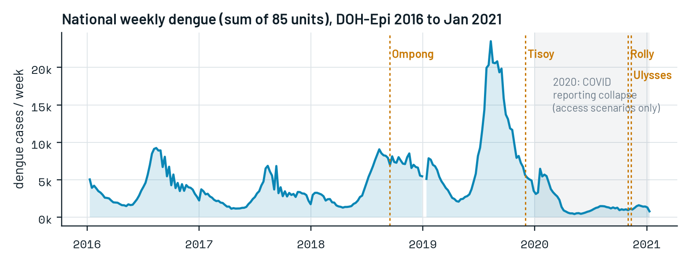
Floodwater spreads leptospirosis within days; standing water breeds the mosquitoes behind dengue for weeks after. The same storm closes roads and grounds ferries, so the most exposed communities are often the ones that cannot reach a hospital.
A typhoon sets off a sequence. Each step is predictable from data that already exist, yet today's response starts only at the last one.
Gale-force winds; ferries suspended; roads blocked by landslides and debris
Rivers carry upstream rain to the lowlands; towns at river mouths flood after the rain stops
Risk from rainfall peaks about two weeks later and runs through flooding (Matsushita et al., 2018)
Breeding sites multiply; cases rise province by province
Prophylaxis, vector control and medical teams go out after cases rise; isolated places are reached last
What is missing is a tool that looks at this storm and says, before the roads close, where disease will rise and who will be cut off.
Climate-driven, province-level (Buczak et al., 2014), but not for a specific storm and without honest ranges
Flood access loss for one city, Metro Manila (Tariverdi et al., 2023), with no health forecast and no ferries
Dengue travels between regions (van Panhuis et al., 2015), but this is unused for storm response
Can flood exposure, a graph of outbreak spread and a storm-disrupted transport network, combined with calibrated forecasts, rank the provinces that need help first, early enough to act?
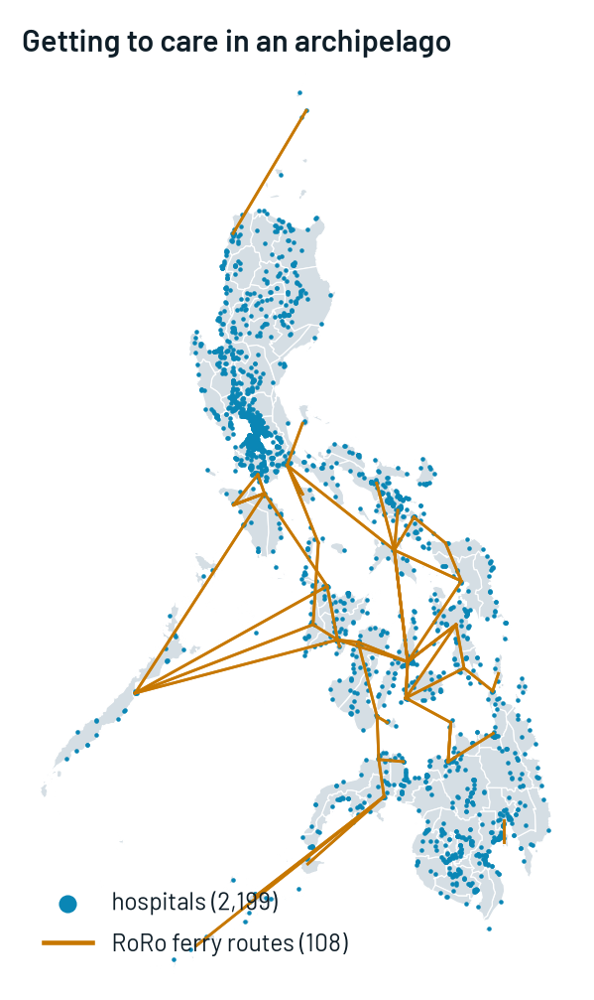
Sentinel-1 observed flood, CHIRPS + IMERG rain, rain routed down rivers, UP NOAH hazard, typhoon gale swaths
PCMCI+ finds which provinces rise first; their recent rise feeds every follower's forecast
XGBoost, 23 quantiles, 1-4 weeks ahead, tested by rolling origin against zero-shot foundation models and a graph network
calibrated chance the next 4 weeks beat the province's usual bad month
OSM roads + RoRo ferries + hospitals, and a friction raster as a second method; a storm cuts both
share of people who lose their route to a hospital, with the range between methods
ranked provinces, drivers and an action tier for a real or shifted track
Each half is validated on its own: forecast vs a seasonal baseline and benchmarks; access vs Metro Manila and Copernicus.
| layer | sources |
|---|---|
| Disease | DOH-Epi dengue, province/city x week, 2016-2021 (HDX); Project CCHAIN city leptospirosis; national PIDSR; OpenDengue |
| People and places | 2020 census; COD-AB boundaries; WorldPop 2020 100 m; Meta HRSL under-5 / 60+ |
| Rain and rivers | CHIRPS v2.0; GPM IMERG V07; HydroRIVERS |
| Storms and flood | IBTrACS; Sentinel-1 radar (Google Earth Engine); UP NOAH hazard maps; Copernicus EMS |
| Getting to care | OpenStreetMap roads; MARINA RoRo routes (roroph); OSM and NOAH health facilities; MAP friction surface |
province-weeks (85 x 262)
hospitals and 108 ferry routes in the access graph
1 km population cells, 109 M people
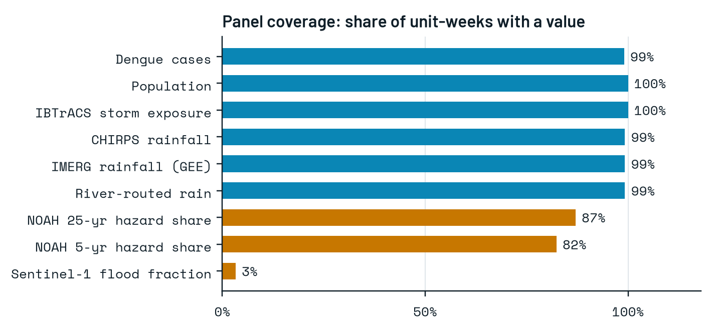
Only aggregated, non-identifiable health data.
| what we found | what we did |
|---|---|
| 126 dengue reporting units, not 81 provinces: cities mixed in, misspellings, boundaries changed since 2020 | A reviewed crosswalk to 85 harmonised 2016-2020 provinces; a week counts only if every member reported |
| 2020 reporting collapsed under COVID-19 (91k vs 442k cases) | 2020 is never a forecast target; it is used for access scenarios only |
| Flood-hazard maps missing for 11 provinces | Carried as missing, never as zero hazard |
| Satellite flood maps disagreed with Copernicus at first | Same-orbit change detection with a dB-difference rule, validated against Copernicus EMS |
| Short series make causal-discovery algorithms over-confident | False discovery rate control, tested on pure noise first |
| Surge probability was under-confident in the middle range | Isotonic recalibration, fitted only on forecasts whose outcome was already known |
| Road network and friction raster disagree once a storm hits | Both are run on every track; the gap is shown as a range, not hidden in one number |
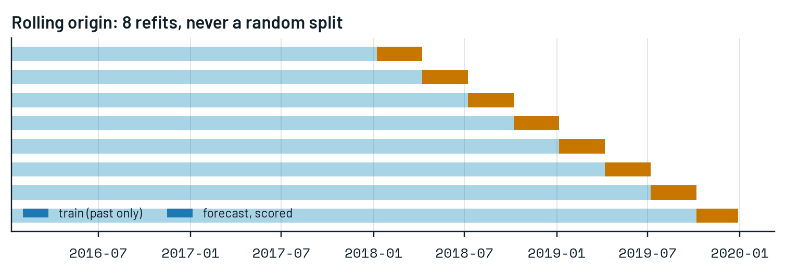
out-of-sample forecasts scored: 85 provinces, 4 horizons, 2018-2019
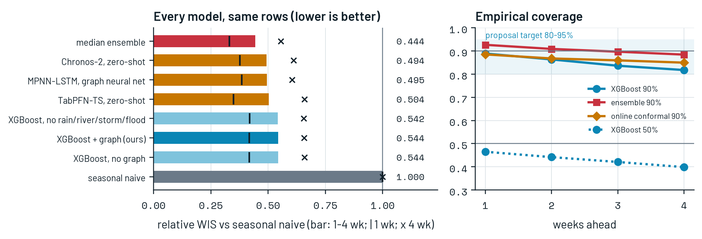
| model | rel WIS | vs xgb | median WIS | cov 90 |
|---|---|---|---|---|
| median ensemble | 0.444 | 0.816 | 6.29 | 0.90 |
| Chronos-2, zero-shot | 0.494 | 0.908 | 6.54 | 0.88 |
| MPNN-LSTM, graph neural net | 0.495 | 0.910 | 6.83 | 0.88 |
| TabPFN-TS, zero-shot | 0.504 | 0.926 | 6.72 | 0.87 |
| XGBoost, no rain/river/storm/flood | 0.542 | 0.997 | 6.26 | 0.85 |
| XGBoost + graph (ours) | 0.544 | 1.000 | 6.23 | 0.85 |
| XGBoost, no graph | 0.544 | 1.001 | 6.24 | 0.85 |
| seasonal naive | 1.000 | 1.839 | 14.97 | 0.85 |
34,050 forecasts, every model on the same rows; XGBoost 90% coverage 85% (target 80-95%).
Brier score of the model's R
after recalibration (base rate: 0.216)
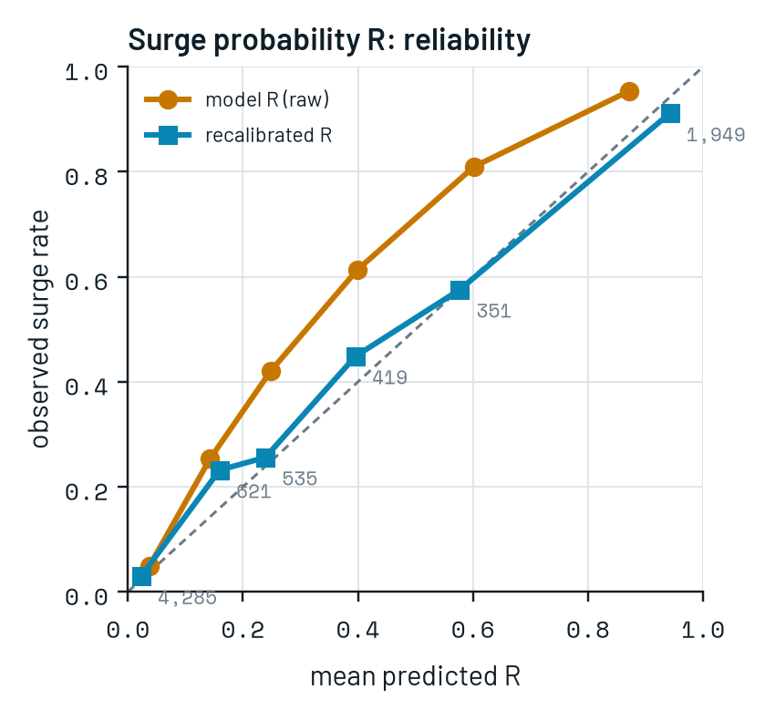
| leader | follower | lead | bootstrap |
|---|---|---|---|
| Cavite | Sorsogon | 1 wk | 70% |
| NCR Second | Bulacan | 3 wk | 70% |
| Quirino | Surigao del Sur | 1 wk | 65% |
| Ilocos Norte | Romblon | 1 wk | 75% |
| NCR Third | Zamboanga del Norte | 1 wk | 85% |
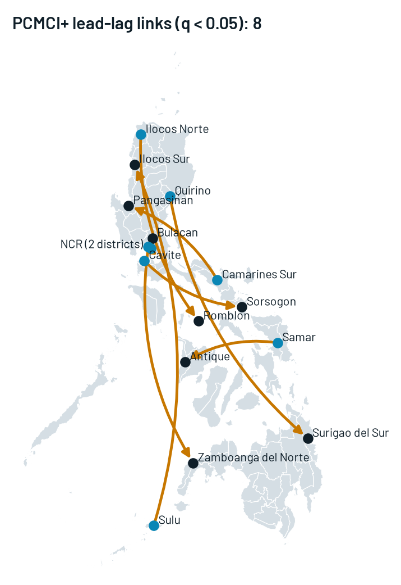
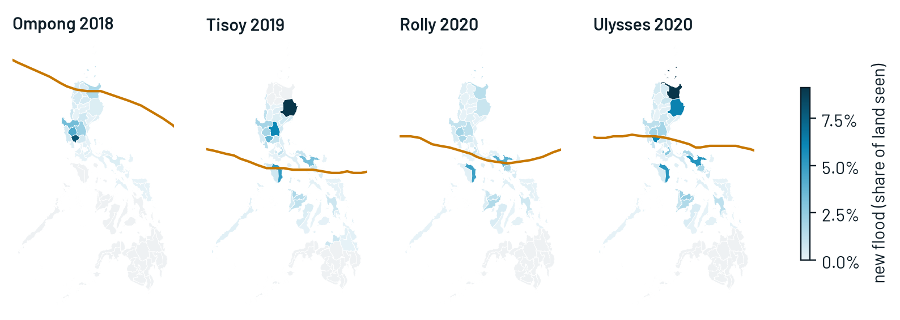
| typhoon | people in new flood | municipalities >1% flooded | most people flooded |
|---|---|---|---|
| Ompong | 0.5 M | 131 | Candaba, Pampanga |
| Tisoy | 1.1 M | 216 | Jaen, Nueva Ecija |
| Rolly | 0.6 M | 173 | Naujan, Oriental Mindoro |
| Ulysses | 1.4 M | 249 | Tuguegarao City, Cagayan |
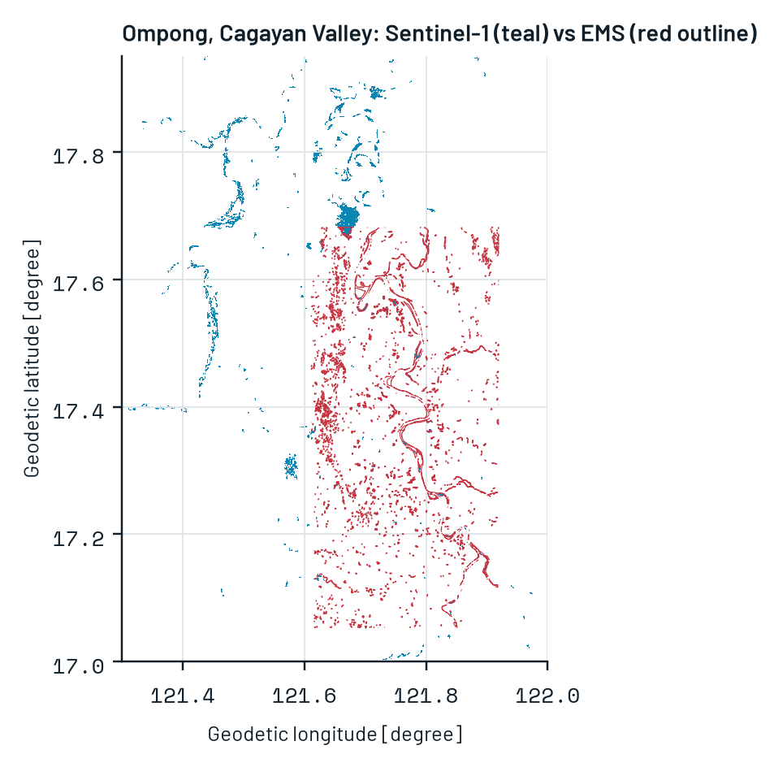
Checked against Copernicus EMS (Ompong): 55% of Sentinel-1 flood inside the EMS areas matches EMS polygons; Sentinel-1 recovers 24% of the EMS-mapped area (one radar pass every 6-12 days misses short floods).
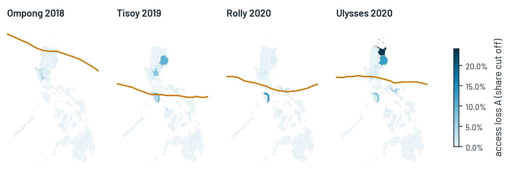
| typhoon | ferries cut | cut off: network | raster | under-5 | 60+ |
|---|---|---|---|---|---|
| Ompong | 42 | 0.3 M | 0.6 M | 27k | 18k |
| Tisoy | 100 | 0.7 M | 1.3 M | 65k | 41k |
| Rolly | 42 | 0.4 M | 0.7 M | 34k | 22k |
| Ulysses | 54 | 1.0 M | 1.6 M | 96k | 63k |
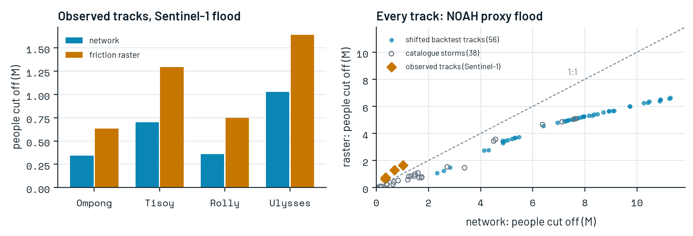
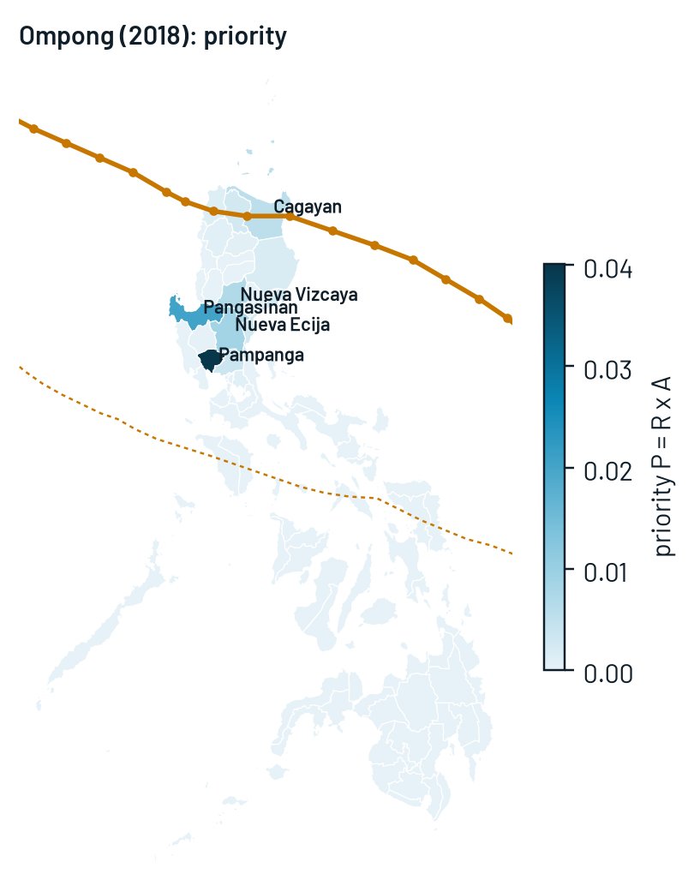
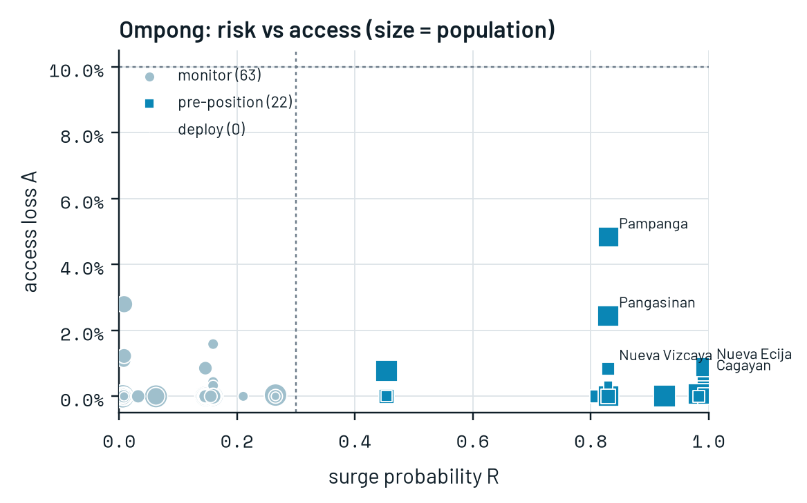
Using data up to the landfall week only: 22 provinces flagged to pre-position supplies before the surge. In the next four weeks, 7 of the top 10 really surged.
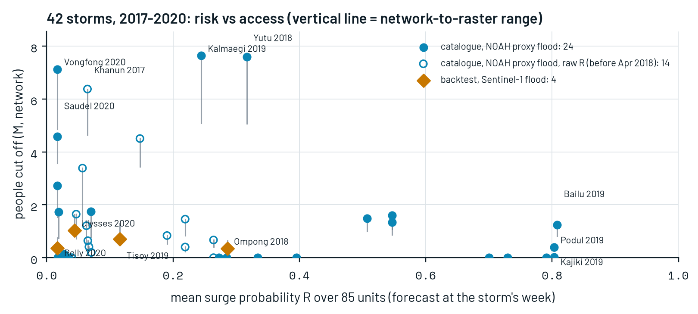
storms scored: 38 more beyond the four backtests, each with the model of its own week
most people cut off: Kalmaegi 2019, flood from hazard maps (an upper bound)
highest mean surge risk: Bailu 2019, in the 2019 epidemic season
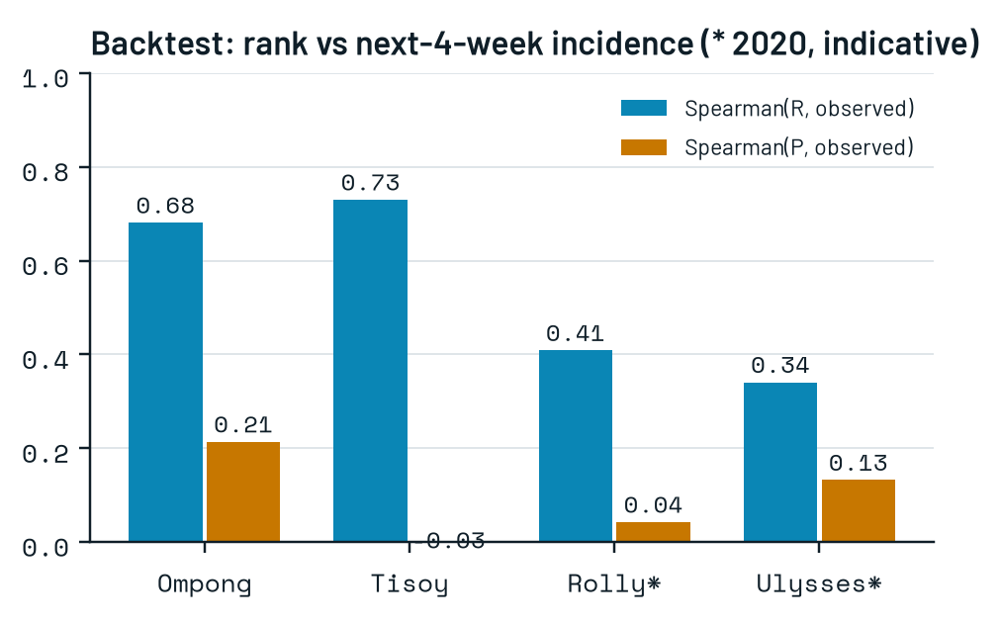
rank correlation, Tisoy
ranking stability (Kendall's τ)
NCR cut off vs ~22% published
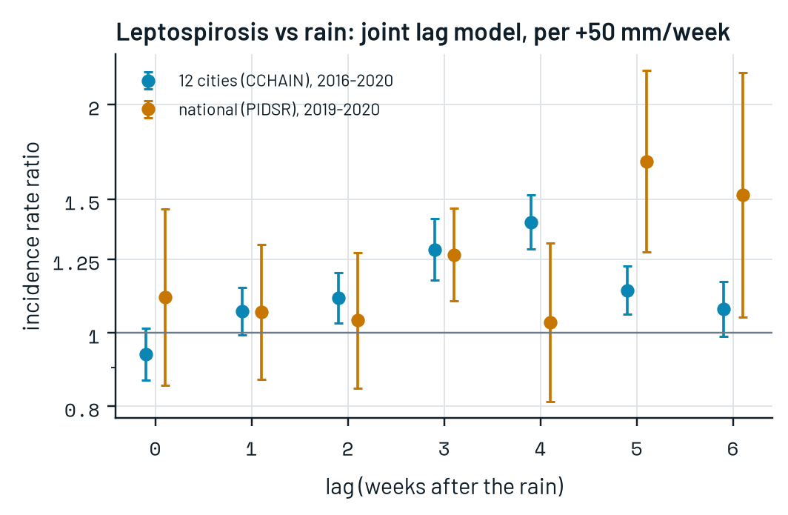
leptospirosis cases 4 weeks after an extra 50 mm of weekly rain, in 12 cities (1.29-1.52)
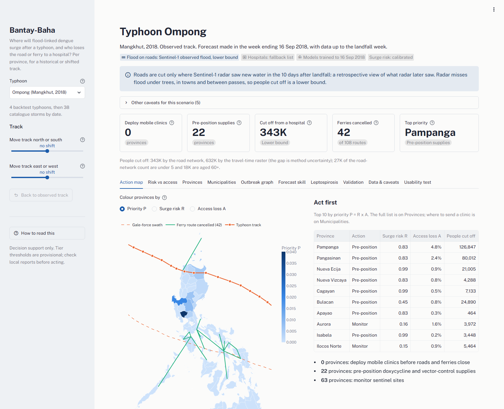
A PAGASA tropical cyclone bulletin goes in: its forecast track and shifted tracks for the cone of uncertainty.
A ranked province list with action tiers to DOH regional offices, provincial health offices and DRRMOs, 48-72 h ahead.
Days 1-7: Sentinel-1 flood maps replace the hazard estimate; ferry and road status update who is cut off.
Weeks 1-8: each PIDSR report is scored against the forecast; R is recalibrated and tiers are reviewed with users.
The output is an action, not a chart: monitor sentinel sites, pre-position doxycycline and vector control, or send mobile clinics before the roads and ferries close.
municipalities with access loss for every scenario
storm scenarios ready on the dashboard
open data and open code; no maps need a tile server
command rebuilds everything when new data arrive
The novelty is the join: storm-specific disease risk × storm-specific loss of access, ferries included, in one ranking a health officer can act on.
Ansari, A. F., Shchur, O., Küken, J., Auer, A., Han, B., Mercado, P., Rangapuram, S. S., Shen, H., Stella, L., Shen, X., Turkmen, C., Bohlke-Schneider, M., Erickson, N., Kapoor, S., Li, Z., Wang, B., Williams, A. R., Ahmed, A., Weber, S., ... Wang, Y. (2025). Chronos-2: From univariate to universal forecasting. arXiv. https://arxiv.org/abs/2510.15821
Balbuena, A., Herbosa, T., & Gundran, C. P. (2010). Cases of leptospirosis after Typhoon Ondoy (international name: Ketsana) seen at the emergency department: The Philippine General Hospital experience. WIT Transactions on Information and Communication Technologies, 43, 605–612. https://doi.org/10.2495/RISK100501
Benjamini, Y., & Hochberg, Y. (1995). Controlling the false discovery rate: A practical and powerful approach to multiple testing. Journal of the Royal Statistical Society: Series B (Methodological), 57(1), 289–300. https://doi.org/10.1111/j.2517-6161.1995.tb02031.x
Blondel, V. D., Guillaume, J.-L., Lambiotte, R., & Lefebvre, E. (2008). Fast unfolding of communities in large networks. Journal of Statistical Mechanics: Theory and Experiment, 2008(10), P10008. https://doi.org/10.1088/1742-5468/2008/10/P10008
Bracher, J., Ray, E. L., Gneiting, T., & Reich, N. G. (2021). Evaluating epidemic forecasts in an interval format. PLoS Computational Biology, 17(2), e1008618. https://doi.org/10.1371/journal.pcbi.1008618
Brooke, J. (1996). SUS: A "quick and dirty" usability scale. In P. W. Jordan, B. Thomas, B. A. Weerdmeester, & I. L. McClelland (Eds.), Usability evaluation in industry (pp. 189–194). Taylor & Francis.
Buczak, A. L., Baugher, B., Babin, S. M., Ramac-Thomas, L. C., Guven, E., Elbert, Y., Koshute, P. T., Velasco, J. M. S., Roque, V. G., Jr., Tayag, E. A., Yoon, I.-K., & Lewis, S. H. (2014). Prediction of high incidence of dengue in the Philippines. PLoS Neglected Tropical Diseases, 8(4), e2771. https://doi.org/10.1371/journal.pntd.0002771
Chen, T., & Guestrin, C. (2016). XGBoost: A scalable tree boosting system. In Proceedings of the 22nd ACM SIGKDD International Conference on Knowledge Discovery and Data Mining (pp. 785–794). https://doi.org/10.1145/2939672.2939785
Copernicus Emergency Management Service. (2018). EMSR312: Typhoon Mangkhut in the Philippines [Rapid mapping activation]. European Commission. https://mapping.emergency.copernicus.eu/activations/EMSR312/
Department of Health Epidemiology Bureau. (2021). DOH-Epi dengue data 2016–2021 [Data set]. Humanitarian Data Exchange. https://data.humdata.org/dataset/ac63a95e-7296-42fb-802b-7f7541c73e45
Funk, C., Peterson, P., Landsfeld, M., Pedreros, D., Verdin, J., Shukla, S., Husak, G., Rowland, J., Harrison, L., Hoell, A., & Michaelsen, J. (2015). The climate hazards infrared precipitation with stations—A new environmental record for monitoring extremes. Scientific Data, 2, 150066. https://doi.org/10.1038/sdata.2015.66
Gibbs, I., & Candès, E. (2021). Adaptive conformal inference under distribution shift. Advances in Neural Information Processing Systems, 34, 1660–1672.
Gorelick, N., Hancher, M., Dixon, M., Ilyushchenko, S., Thau, D., & Moore, R. (2017). Google Earth Engine: Planetary-scale geospatial analysis for everyone. Remote Sensing of Environment, 202, 18–27. https://doi.org/10.1016/j.rse.2017.06.031
Hoo, S. B., Müller, S., Salinas, D., & Hutter, F. (2025). The tabular foundation model TabPFN outperforms specialized time series forecasting models based on simple features. arXiv. https://arxiv.org/abs/2501.02945
Huffman, G. J., Stocker, E. F., Bolvin, D. T., Nelkin, E. J., & Tan, J. (2023). GPM IMERG final precipitation L3 half hourly 0.1 degree x 0.1 degree V07 [Data set]. NASA Goddard Earth Sciences Data and Information Services Center. https://doi.org/10.5067/GPM/IMERG/3B-HH/07
Knapp, K. R., Kruk, M. C., Levinson, D. H., Diamond, H. J., & Neumann, C. J. (2010). The International Best Track Archive for Climate Stewardship (IBTrACS): Unifying tropical cyclone data. Bulletin of the American Meteorological Society, 91(3), 363–376. https://doi.org/10.1175/2009BAMS2755.1
Lehner, B., & Grill, G. (2013). Global river hydrography and network routing: Baseline data and new approaches to study the world's large river systems. Hydrological Processes, 27(15), 2171–2186. https://doi.org/10.1002/hyp.9740
Lundberg, S. M., & Lee, S.-I. (2017). A unified approach to interpreting model predictions. Advances in Neural Information Processing Systems, 30, 4765–4774.
Matsushita, N., Ng, C. F. S., Kim, Y., Suzuki, M., Saito, N., Ariyoshi, K., Salva, E. P., Dimaano, E. M., Villarama, J. B., Go, W. S., & Hashizume, M. (2018). The non-linear and lagged short-term relationship between rainfall and leptospirosis and the intermediate role of floods in the Philippines. PLoS Neglected Tropical Diseases, 12(4), e0006331. https://doi.org/10.1371/journal.pntd.0006331
OpenStreetMap contributors. (2026). OpenStreetMap data extract: Philippines [Data set]. Geofabrik. https://download.geofabrik.de/asia/philippines.html
Page, L., Brin, S., Motwani, R., & Winograd, T. (1999). The PageRank citation ranking: Bringing order to the web (Technical Report 1999-66). Stanford InfoLab.
Panagopoulos, G., Nikolentzos, G., & Vazirgiannis, M. (2021). Transfer graph neural networks for pandemic forecasting. Proceedings of the AAAI Conference on Artificial Intelligence, 35(6), 4838–4845. https://doi.org/10.1609/aaai.v35i6.16616
Petricola, S., Reinmuth, M., Lautenbach, S., Hatfield, C., & Zipf, A. (2022). Assessing road criticality and loss of healthcare accessibility during floods: The case of Cyclone Idai, Mozambique 2019. International Journal of Health Geographics, 21, 14. https://doi.org/10.1186/s12942-022-00315-2
Philippine Statistics Authority. (2021). Philippines: 2020 census of population and housing, population by municipality [Data set]. Humanitarian Data Exchange. https://data.humdata.org/dataset/c1edf0c5-58c8-4d39-b566-937b1ad7907f
Philippine Statistics Authority & National Mapping and Resource Information Authority. (2025). Philippines: Subnational administrative boundaries (COD-AB) [Data set]. Humanitarian Data Exchange. https://data.humdata.org/dataset/caf116df-f984-4deb-85ca-41b349d3f313
Runge, J. (2020). Discovering contemporaneous and lagged causal relations in autocorrelated nonlinear time series datasets. In Proceedings of the 36th Conference on Uncertainty in Artificial Intelligence (PMLR 124, pp. 1388–1397). https://arxiv.org/abs/2003.03685
Runge, J., Nowack, P., Kretschmer, M., Flaxman, S., & Sejdinovic, D. (2019). Detecting and quantifying causal associations in large nonlinear time series datasets. Science Advances, 5(11), eaau4996. https://doi.org/10.1126/sciadv.aau4996
Tariverdi, M., Nunez-del-Prado, M., Leonova, N., & Rentschler, J. (2023). Measuring accessibility to public services and infrastructure criticality for disasters risk management. Scientific Reports, 13, 1569. https://doi.org/10.1038/s41598-023-28460-z
Tatem, A. J. (2017). WorldPop, open data for spatial demography. Scientific Data, 4, 170004. https://doi.org/10.1038/sdata.2017.4
Tellman, B., Sullivan, J. A., Kuhn, C., Kettner, A. J., Doyle, C. S., Brakenridge, G. R., Erickson, T. A., & Slayback, D. A. (2021). Satellite imaging reveals increased proportion of population exposed to floods. Nature, 596, 80–86. https://doi.org/10.1038/s41586-021-03695-w
Tiecke, T. G., Liu, X., Zhang, A., Gros, A., Li, N., Yetman, G., Kilic, T., Murray, S., Blankespoor, B., Prydz, E. B., & Dang, H.-A. H. (2017). Mapping the world population one building at a time. arXiv. https://arxiv.org/abs/1712.05839
UN-SPIDER. (n.d.). Recommended practice: Flood mapping and damage assessment using Sentinel-1 SAR data in Google Earth Engine. United Nations Office for Outer Space Affairs. https://www.un-spider.org/advisory-support/recommended-practices/recommended-practice-google-earth-engine-flood-mapping
van Panhuis, W. G., Choisy, M., Xiong, X., Chok, N. S., Akarasewi, P., Iamsirithaworn, S., Lam, S. K., Chong, C. K., Lam, F. C., Phommasak, B., Vongphrachanh, P., Bouaphanh, K., Rekol, H., Hien, N. T., Thai, P. Q., Duong, T. N., Chuang, J.-H., Liu, Y.-L., Ng, L.-C., ... Burke, D. S. (2015). Region-wide synchrony and traveling waves of dengue across eight countries in Southeast Asia. Proceedings of the National Academy of Sciences, 112(42), 13069–13074. https://doi.org/10.1073/pnas.1501375112
Weiss, D. J., Nelson, A., Vargas-Ruiz, C. A., Gligorić, K., Bavadekar, S., Gabrilovich, E., Bertozzi-Villa, A., Rozier, J., Gibson, H. S., Shekel, T., Kamath, C., Lieber, A., Schulman, K., Shao, Y., Qarkaxhija, V., Nandi, A. K., Keddie, S. H., Rumisha, S., Amratia, P., ... Gething, P. W. (2020). Global maps of travel time to healthcare facilities. Nature Medicine, 26, 1835–1838. https://doi.org/10.1038/s41591-020-0931-3
Zadrozny, B., & Elkan, C. (2002). Transforming classifier scores into accurate multiclass probability estimates. In Proceedings of the 8th ACM SIGKDD International Conference on Knowledge Discovery and Data Mining (pp. 694–699). https://doi.org/10.1145/775047.775151